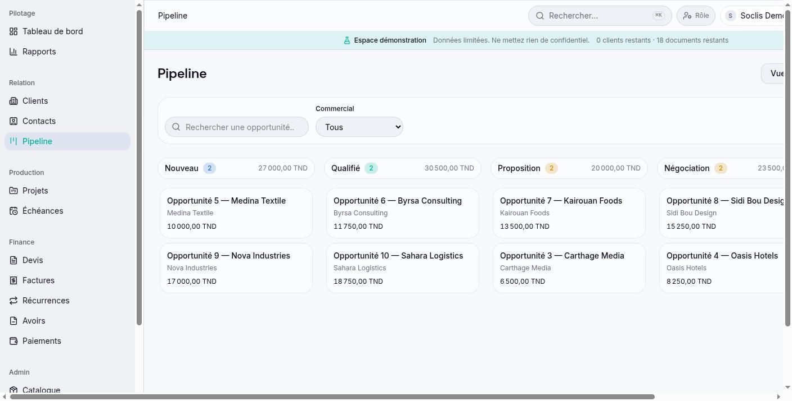
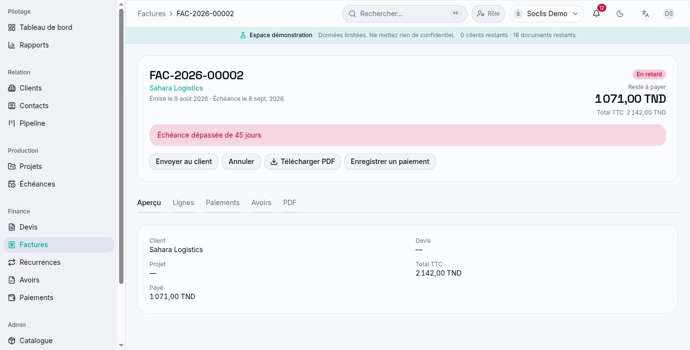
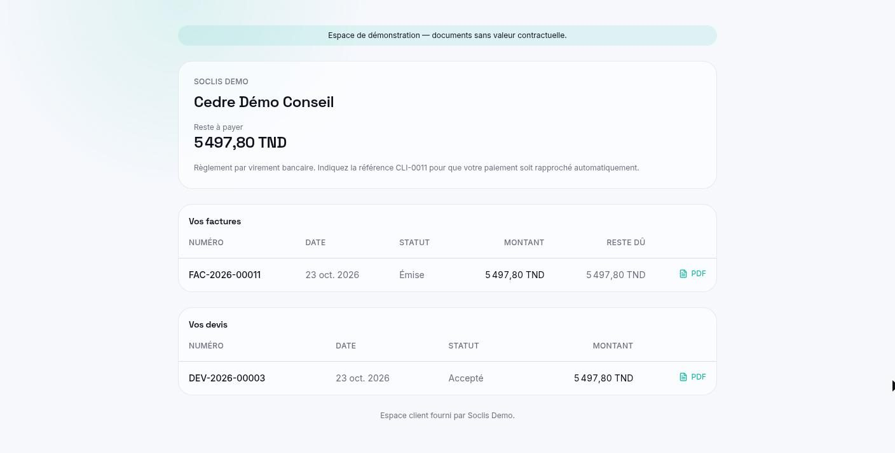

Un CRM et outil de facturation pour les sociétés de services, qui suit chaque client du premier contact à la facture payée, en français, anglais et arabe.
3langues, dont l’arabe de droite à gauche
6rôles utilisateurs avec leurs propres droits
3offres : démo, starter et pro
4rapports détaillés avec export CSV
En bref
SOCLIS CRM est une application web destinée aux sociétés de services : agences, intégrateurs, prestataires de maintenance. Elle réunit au même endroit les fiches clients, le pipeline commercial, les projets et échéances de maintenance, les devis, les factures, les avoirs et les paiements.
Plusieurs sociétés utilisent la même application, chacune avec ses données séparées. Une personne peut appartenir à plusieurs sociétés et y avoir un rôle différent. Les clients disposent de leur propre espace en lecture seule grâce à un lien sécurisé, sans créer de compte. L’interface fonctionne sur ordinateur et sur mobile, en français, anglais et arabe.
Pour qui
Dirigeants et administrateurs
Renseignent l’identité de la société, la numérotation et les règles internes, invitent l’équipe et choisissent ce que chaque rôle peut faire.
Équipes commerciales
Gèrent leur propre portefeuille clients, suivent les opportunités sur un tableau de pipeline et préparent les devis.
Équipes finance
Émettent factures et avoirs, enregistrent les paiements, suivent les retards et consultent les rapports de chiffre d’affaires.
Managers et lecteurs
Suivent clients, projets et échéances, en lecture seule lorsque la facturation ne fait pas partie de leur travail.
Clients finaux
Ouvrent un lien personnel pour voir leur solde, télécharger factures et devis, et accepter ou refuser un devis en ligne.
Le problème résolu
Informations dispersées
Coordonnées, devis, factures et paiements vivent souvent dans des tableurs et dossiers séparés. Ici, chaque client a une fiche unique qui relie l’ensemble.
Échéances oubliées
Contrats de maintenance et factures impayées s’oublient facilement. L’application suit les échéances, signale les retards et envoie des relances.
Contrôle des accès
Tout le monde n’a pas à voir les chiffres financiers. Chaque rôle ne voit et ne modifie que ce dont il a besoin, et chaque commercial peut être limité à ses propres clients.
Langues et règles locales
Équipes et clients travaillent en français, anglais ou arabe, et les documents reprennent les mentions locales : matricule fiscal, TVA, montants en dinars à trois décimales.
Fonctionnalités principales
Fiches clients
Une page par client avec contacts, documents, projets, devis, factures, paiements, état de service et historique, ainsi qu’étiquettes, filtres enregistrés et import CSV.
Pipeline commercial
Un tableau d’opportunités par étape, en glisser-déposer, avec totaux et prévision pondérée, ainsi qu’une vue liste.
Projets et maintenance
Projets ponctuels ou contrats de maintenance avec budget, jalons et échéances récurrentes, en liste ou en calendrier mensuel.
Devis
Lignes issues d’un catalogue de services, remises et TVA, envoi par e-mail avec le PDF joint, et page en ligne où le client répond.
Factures et avoirs
Factures créées de zéro, depuis un devis accepté ou depuis un projet, factures récurrentes, et avoirs liés à la facture d’origine.
Paiements
Virement, chèque ou espèces, un paiement réparti sur plusieurs factures, et extourne avec motif en conservant l’historique.
Espace client
Un lien sécurisé, avec expiration et révocation, qui donne au client son solde, les consignes de règlement et ses documents à télécharger.
Tableau de bord et rapports
Un tableau de bord adapté au rôle, avec les priorités du jour et les chiffres clés, et des rapports sur le chiffre d’affaires, les clients, les projets et les échéances.
Notifications et historique
Alertes sur les échéances dépassées et les factures impayées, historique complet des modifications, corbeille avec annulation et recherche rapide par Ctrl+K.
Offres et quotas
Chaque société dispose d’une offre qui fixe des limites de clients, d’utilisateurs, de factures et de stockage, avec un espace de démonstration en un clic.
Fonctionnement
Configurer la société
Le propriétaire renseigne l’identité de la société et les paramètres de facturation, puis invite les membres de l’équipe avec un rôle.
Ajouter clients et opportunités
L’équipe crée ou importe ses clients et fait avancer chaque opportunité dans les étapes du pipeline.
Chiffrer et obtenir une réponse
Un devis est construit à partir du catalogue et envoyé au client, qui l’accepte ou le refuse depuis un lien.
Réaliser et suivre
Projets et échéances de maintenance sont suivis, avec des rappels avant et après chaque date.
Facturer et encaisser
La facture est créée depuis le devis ou le projet, envoyée en PDF dans la langue du client, puis les paiements y sont imputés.
Analyser les résultats
Les responsables consultent le tableau de bord et les rapports pour voir le chiffre d’affaires, les impayés et le travail à venir.
Technologies
Interface
Next.js et ReactConstruisent l’application web, ses pages et les pages publiques destinées aux clients.
TypeScriptUtilisé côté interface et côté serveur pour un code cohérent et vérifié.
Tailwind CSS et Radix UIApportent le design visuel et des composants accessibles comme les menus et les fenêtres de dialogue.
TanStack Query et ZustandTiennent à jour à l’écran les données du serveur et conservent la session de l’utilisateur.
RechartsDessine les graphiques du tableau de bord.
Serveur et API
Node.js et ExpressServent l’API REST de l’application et appliquent les rôles, les périmètres de données et les quotas des offres.
ZodVérifie chaque formulaire et chaque requête pour n’enregistrer que des données valides.
node-cronLance les tâches quotidiennes : factures en retard, relances, échéances et factures récurrentes.
NodemailerEnvoie par e-mail les invitations, les devis, les factures et les relances de paiement.
Données
MySQLStocke sociétés, clients, projets et documents de facturation, séparés par société.
SequelizeDécrit le modèle de données et gère ses évolutions dans le temps.
Documents et langues
PDFKitGénère devis, factures et avoirs en PDF, en français, anglais ou arabe.
next-intlTraduit l’interface et passe à une mise en page de droite à gauche en arabe.
Qualité
Lanceur de tests NodeExécute des tests unitaires et des tests sur base réelle pour les quotas, la facturation, les droits et la séparation des données.
ESLintContrôle le style du code et les erreurs courantes.
Aperçu
Tableau de bord avec les priorités du jour et les chiffres clés.

Tableau du pipeline commercial par étape.

Facture en retard avec reste à payer et actions de facturation.

Espace client avec solde, factures et devis.
Ce que ça apporte
Un seul outil pour tout le cycle
Du premier contact à la facture payée, chaque étape est rattachée à la même fiche client.
Moins d’oublis
Échéances dépassées, factures impayées et affaires inactives sont listées chaque jour sur le tableau de bord.
Des responsabilités claires
Chaque rôle travaille dans son périmètre, et chaque modification est conservée dans l’historique.
Plus simple pour les clients
Les clients répondent aux devis et retrouvent leurs documents en ligne, dans leur langue, sans créer de compte.